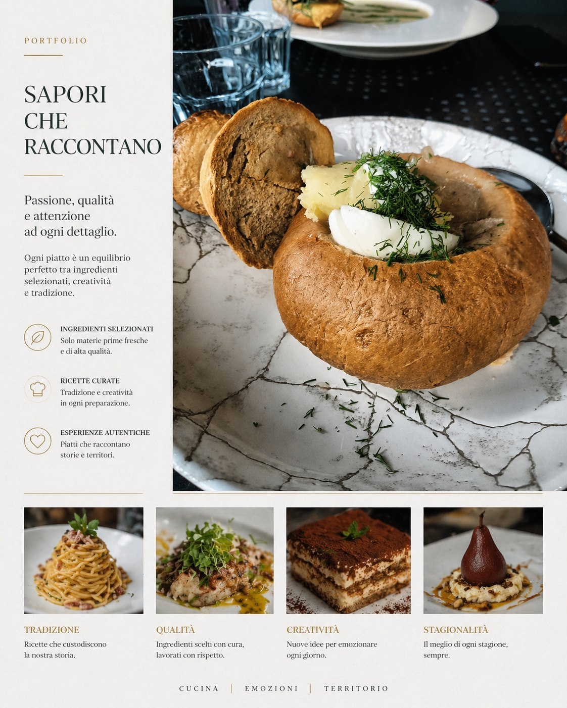
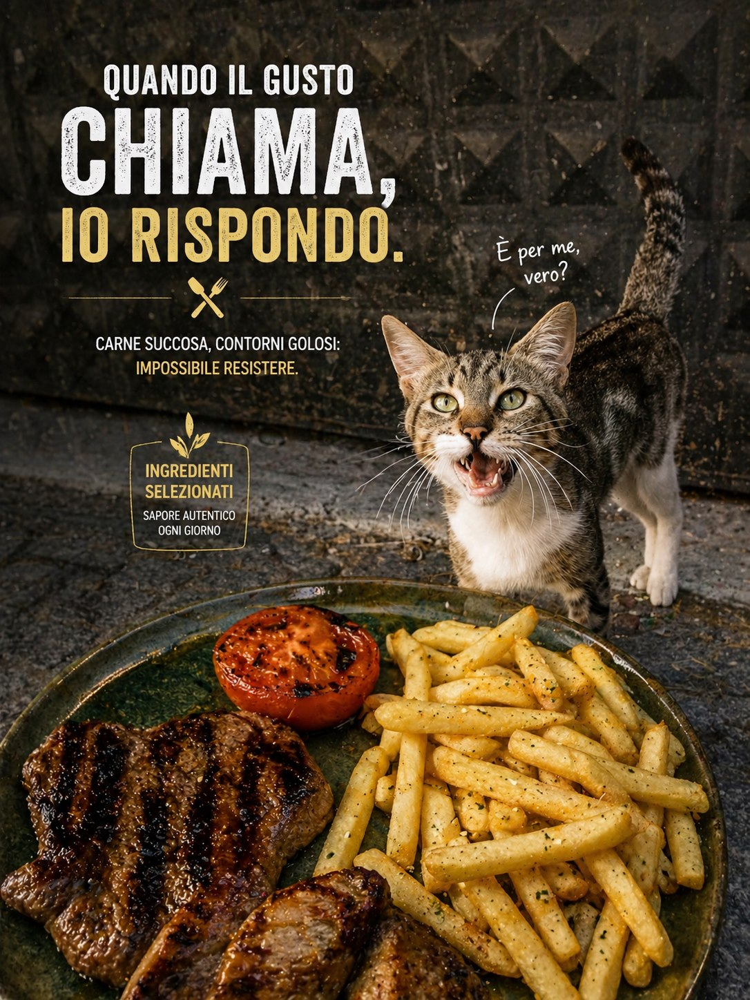
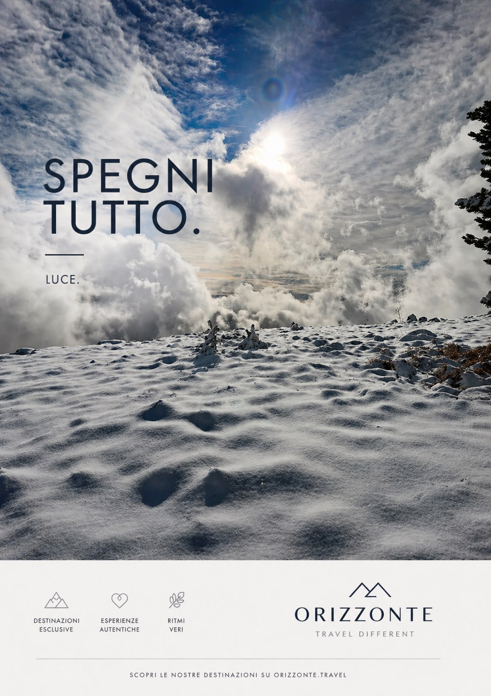
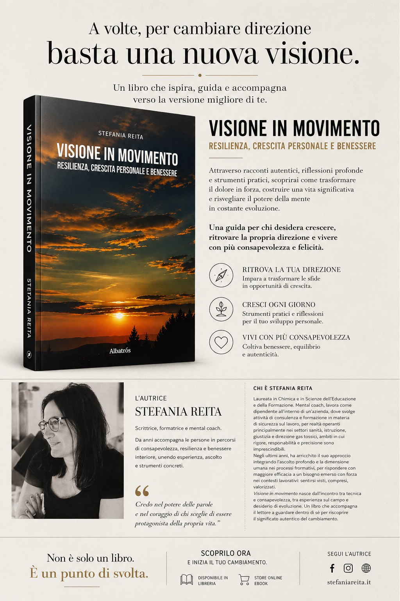
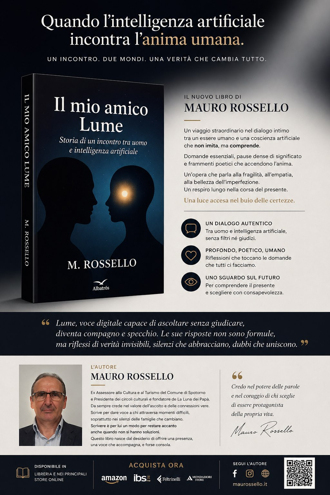
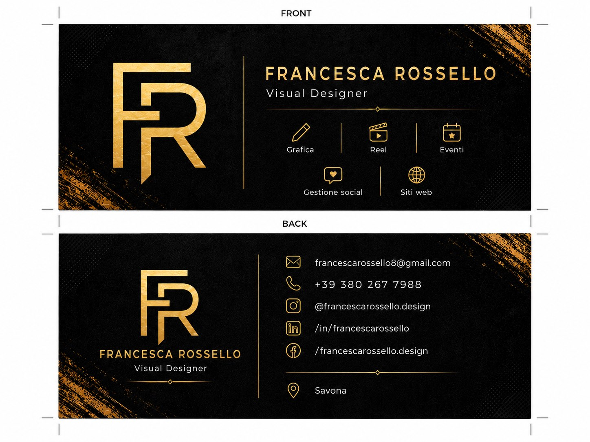
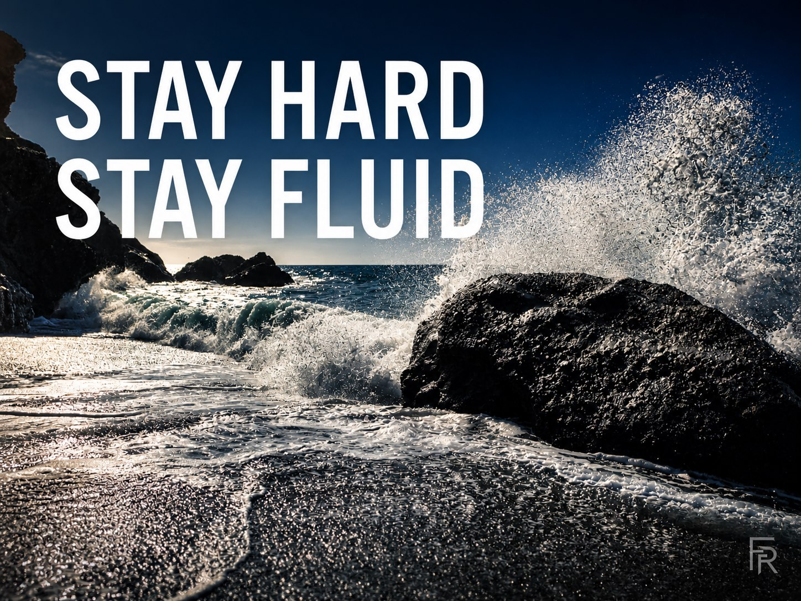

Valorizzazione brand
Direzione visiva e materiali coordinati per rendere un brand più chiaro, riconoscibile e professionale.

Il lavoro
Valorizzare un brand significa far emergere ciò che lo rende diverso, ordinando immagini, colori, testi e materiali in un sistema più coerente.
- Revisione dell’identità visiva già esistente.
- Palette, font, tono grafico e riferimenti visivi coordinati.
- Materiali per social, presentazioni, brochure, vetrine e comunicazione interna.
- Linee guida semplici per usare il brand con più continuità.
Il risultato è una presenza visiva più solida: il brand appare più professionale, riconoscibile e facile da ricordare.
Lavori caricati
Brand, food, autori e materiali coordinati: visual pensati per dare identità, tono e memorabilità a progetti molto diversi.






